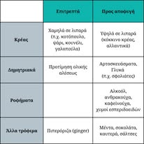
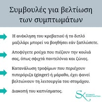

Articles & tips
Educational content that makes nutrition easier to understand.
This page uses the visual posters you provided and can be expanded later with blog posts, downloadable guides, FAQs or short evidence-based articles.






How this section can grow
Nutrition tips by topic
Articles on everyday diet questions
Visual infographics from social media
Downloadable patient resources
For now, the website uses the images you sent as the starter educational library. Later, each poster can open into its own article page with more explanation below it.